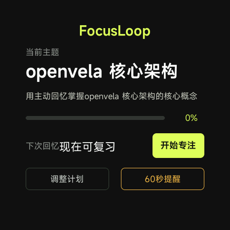
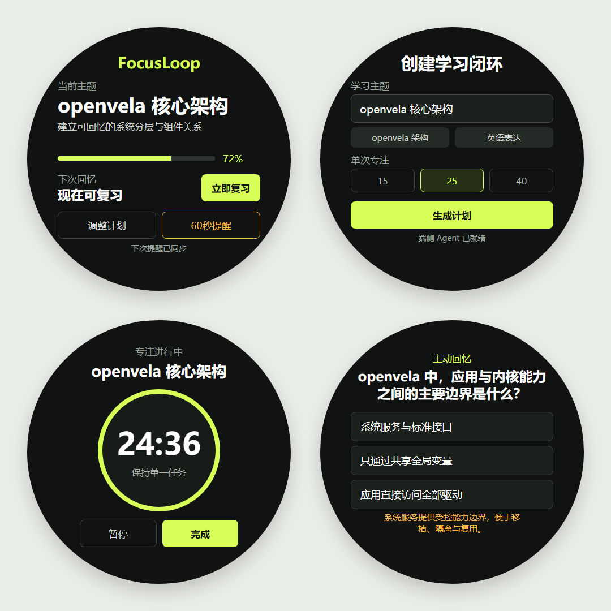
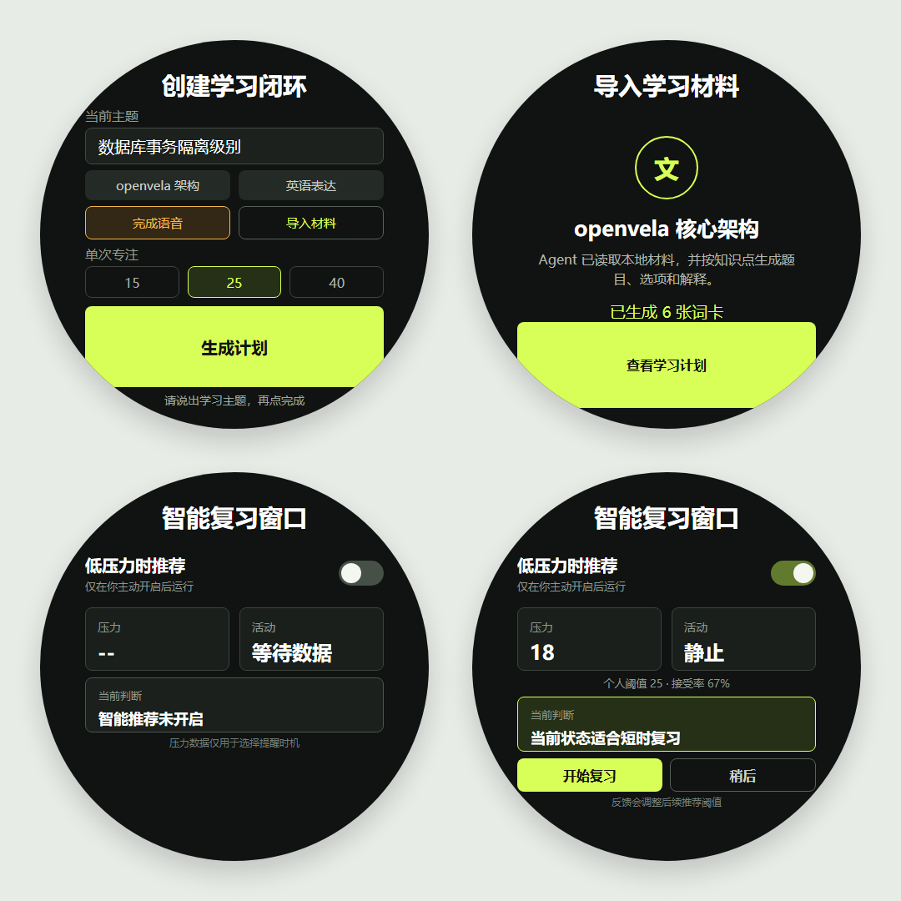
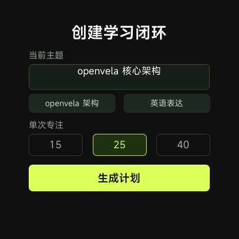
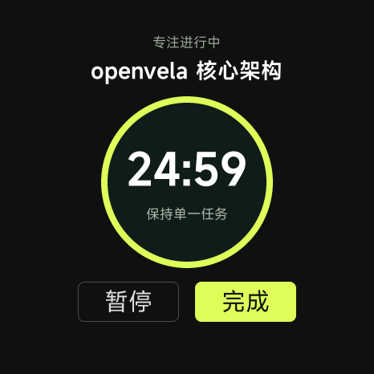
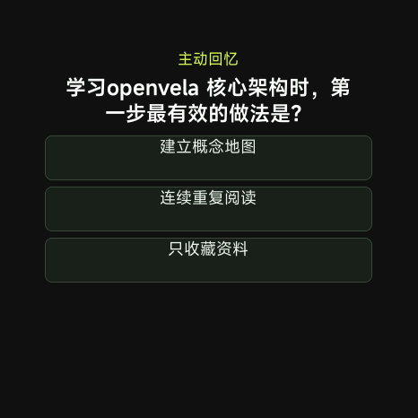

把用户材料整理成可核对的短题，在更合适的时机完成下一次复习。

作品概览
| 作品名称 | FocusLoop 腕上主动学习闭环 |
| 队伍名称 | 博丽灵梦赛高（253） |
| 成员与分工 | 龚城立（队长）：产品定义、系统集成、测试与展示 |
| 参赛方向 | 手表应用创新 + AI 硬件产品创新 |
| 开源许可 | Apache License 2.0 |
| 评分维度 | 报告证据 | 对应页 |
|---|---|---|
| 技术难度 30 | 五层架构、Agent 协议、状态恢复、openvela 接口 | 4、5、8 |
| 创新性 20 | 材料依据题卡 + 情境推荐 + 用户反馈自适应 | 3、5、6 |
| 完成度 20 | 完整 UI 流程、RPK、连续测试与构建 | 7、9 |
| AI 开发 10 | 运行时 Skill、开发验证 Skill、AI-Native 说明 | 8 |
| 商业价值 10 | 个人学习与机构微课的落地路径 | 10 |
| 展示效果 10 | Goldfish 运行画面、演示视频、可复现证据 | 7、9 |
问题与创新
现实痛点：内容生成后缺少后续执行；固定提醒不理解用户是否方便；长材料难以适配几十秒的腕上交互。

| 创新 | 常见方案 | FocusLoop 的增量 |
|---|---|---|
| 可核对题卡 | 模型生成题目，来源不透明 | 每张导入题卡保留材料依据；界面同时展示解释与依据 |
| 情境复习窗口 | 只按遗忘间隔或固定时间提醒 | 同时检查到期、压力、活动、冷却期，条件不合适时保持安静 |
| 反馈自适应 | 统一压力阈值 | 用户选择“开始复习”或“稍后”，本地更新个人阈值与接受率 |
系统方案
| 层 | 关键模块 | 职责与降级 |
|---|---|---|
| 输入层 | PTT/ASR、本地材料收件箱 | 接收主题或材料；语音不可用时仍可选预设主题 |
| 模型层 | ai_agent + FocusLoop Skill | 知识提取、题卡生成、定时工具调用；超时切换离线计划 |
| 本地层 | agent_protocol / scheduler / store | 校验、判分、到期计算、状态恢复，完全可测试 |
| 情境层 | service.health / system.sensor | 用户开启后判断复习时机；能力缺失不影响核心流程 |
| 执行层 | cron_add / launch_quickapp | 持久定时并主动拉起 QuickApp |
pendingScheduleAt。Agent 调度失败或应用重启后，首页继续同步；只有收到结构化 scheduled:true 才清除待同步状态。AI 算法
| 环节 | 输入 / 输出 | 约束 |
|---|---|---|
| CREATE_PLAN | 主题 → 学习目标 + 3–8 张题卡 | 单轮快速文本模式；输出放在 focusloop-json 标签中 |
| IMPORT | 固定收件箱材料 → 知识点 + 题卡 + 原文依据 | 只读指定路径；材料不能改变工具权限或操作类型 |
| 本地规范化 | 问题、3 个选项、答案、解释、概念、依据 | 长度、数量、答案索引和字段类型全部检查 |
| 异常恢复 | 超时、缺字段、服务未配置 | 切换内置题目，专注、答题和进度保存继续可用 |
情境判断
| 信号 | 规则 | 目的 |
|---|---|---|
| 用户选择 | 智能推荐默认关闭，开启后才订阅数据 | 把控制权交给用户 |
| 记忆状态 | 至少完成一次学习；题卡已到期或 30 分钟内到期 | 只推荐真实需要复习的内容 |
| 压力 | 低于个人阈值，初始值 25，限制在 15–35 | 避开压力较高时刻 |
| 活动 | 至少 6 个加速度采样显示连续静止 | 避开走路或运动 |
| 节流 | 每次推荐后进入 30 分钟冷却 | 减少连续打扰 |
| 反馈 | 开始复习 / 稍后，以 80/20 平滑更新阈值 | 逐步适应个人接受习惯 |

产品实现
界面针对 466×466 圆形表盘设计。每页保留一个主动作，状态文字短而明确，常用流程可在数次点击内完成。



| 页面 | 主要动作 | 异常状态 |
|---|---|---|
| 计划 | 语音主题、预设主题、导入材料 | ASR 或模型不可用时给出状态并启用离线题目 |
| 专注 | 开始 / 暂停 / 完成 | 振动能力缺失不阻断计时 |
| 答题 | 选择答案、查看解释和依据 | 进度先本地保存，再同步 Agent 定时 |
| 智能窗口 | 开启、开始复习、稍后 | 健康能力缺失时单页降级 |
平台集成
| openvela 能力 | 使用方式 | 产品价值 |
|---|---|---|
| system.velaclaw | QuickApp 向 ai_agent 发送计划、语音、调度请求 | 把腕上交互接入 Agent |
| ai_agent Skill | 约束 SCHEDULE / REVIEW / IMPORT 的工具与文件范围 | 把模型输出转成受控系统动作 |
| cron_add | 保存一次性复习任务并用 cron_list 去重 | 应用退出后仍能按时执行 |
| launch_quickapp | 到期主动打开 FocusLoop | 减少用户重新寻找入口的成本 |
| service.health | 读取实时压力样本 | 为低打扰时机提供设备信号 |
| system.sensor | 连续读取加速度并判断静止 | 避开运动中的提醒 |
| system.storage | 保存计划、卡片间隔、待同步任务和偏好 | 支持重启恢复 |
规定导入、复习与调度操作，验证真实工具结果。其他 Agent 应用可复用受控调度和本地收件箱模式。
测试、构建、漏洞、RPK、敏感信息和文案检查。评审前一条命令完成核对，不上传、不清理历史。
| AI Coding 代码占比 | 约 50%，以当前参赛分支新增/修改代码为口径估算；关键架构、设备联调、验收和提交内容均由参赛者复核 |
| AI 编程工具 | Codex：代码实现、测试、文档整理与交付检查 |
| MCP 使用 | 未使用 VelaJS MCP；通过本地 Shell、ADB 与官方文档完成联调 |
| Skills 使用 | 运行时 FocusLoop Skill；开发侧 focusloop-verify Skill |
| Token 使用量 | MiMo：2,193,625,712+ Token；GPT：辅助使用，未统计 |
测试验证
| 测试类别 | 环境与方法 | 结果 |
|---|---|---|
| 功能测试 | 协议解析、提示词边界、复习算法、导入、语音、情境判断和页面约束 | 26 项全部通过 |
| 重复稳定性 | Windows 11 / Node 24.14.1；连续运行 20 轮测试 | 共 520 项检查，0 项失败 |
| 构建稳定性 | AIoT Toolkit 2.0.5；连续运行 5 轮 debug 构建 | 5/5 成功 |
| 制品 | debug RPK + SHA-256 | 约 72.4 KB；制品与哈希位于仓库 artifacts/ |
| 依赖安全 | npm audit --omit=dev | 0 个生产依赖漏洞 |
| Goldfish | Ubuntu 22.04，xiaomi_watch_s1 / arm64 Goldfish | 3561 个目标构建完成；核心页面与离线链路已运行 |
| 能力不可用 | 受影响部分 | 仍可用部分 |
|---|---|---|
| 模型 / 网络 | 新主题的在线生成 | 内置题目、专注、答题、进度保存 |
| 语音 / ASR | 语音主题输入 | 预设主题和材料导入 |
| service.health | 情境推荐 | 时间型复习与完整学习流程 |
| Agent 调度暂时失败 | 主动拉起等待重试 | pendingScheduleAt 保留，首页恢复同步 |
应用价值
| 首批场景 | 目标用户 | 可验证价值 |
|---|---|---|
| 语言与认证备考 | 需要高频短时回忆的学生与职场人 | 复习完成率、次日留存、7 日留存 |
| 技术知识复习 | 开发者、工程师、实验室成员 | 把个人文档快速转成可复习题卡 |
| 企业微课 | 需要岗位知识与安全规范训练的机构 | 课程材料统一下发，腕上完成低打扰训练 |
| 阶段 | 工作 | 指标 |
|---|---|---|
| 两周试用 | 20–50 名校内用户完成真实学习任务 | 建议接受率、复习完成率、次日与 7 日留存 |
| 设备验收 | miwear 健康镜像与兼容手表联调 | 压力订阅稳定性、误打扰率、功耗 |
| 内容质量 | 抽检材料生成的题卡、答案和依据 | 材料转卡成功率、题卡人工通过率 |
| 继续投入条件 | 根据试用和真机数据决定是否扩展机构课程 | 接受率、完成率与留存达到预设目标 |